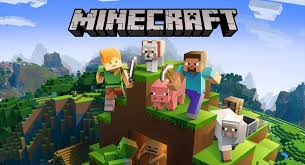
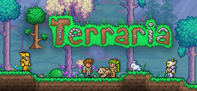
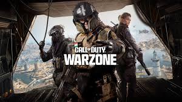
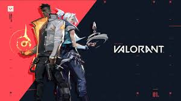

This blog is about comparing multipe games from Sandbox Games, to Shooting Games and More! We will only talk about COD Warzone because there are so many Cod games, but COD is free one.
Contents of the Blog Sandbox Games Minecraft is a 2011 sandbox game developed by Mojang Studios and originally released in 2009. The game was created by Markus "Notch" Persson
in the Java programming language. Following several early private testing versions, it was first made public in May 2009 before being fully released on
November 18, 2011, with Notch stepping down and Jens "Jeb" Bergensten taking over development. Minecraft has become the best-selling video
game in history, with over 300 million copies sold and nearly 140 million monthly active players as of 2023. It has been ported to several platforms.
The name means that you "Mine" for resources, and "Craft" things with the resources that you got from mining.
Raft is an open world survival-sandbox video game developed by Swedish developer Redbeet Interactive, and published by Axolot Games.
The game was released as an early access title on 23 May 2018 on Steam, after initial release as a free download on indie platform
Itch.io in 2016. On 20 June 2022 Raft was taken out of early access with the release of its final chapter. Taking place in a flooded apocalypse
the player takes on the role of a forward scout, a survivor who ventures out into the open sea in search of habitable land and resources.
The game is played from the first-person and third-person perspective and can be played either in the single-player or multiplayer mode.
 Terraria is a 2011 action-adventure sandbox game developed by Re-Logic. The game was first released for Windows and has since been ported to
other PC and console platforms. The game features exploration, crafting, building, painting, and combat with a variety of creatures in a procedurally generated
2D world. Terraria received generally positive reviews and sold over 44 million copies by 2022, making it one of the best-selling video games. Terraria is a 2D
sandbox game with gameplay that revolves around exploration, building, crafting, combat, survival, and mining, playable in both single-player and multiplayer
modes.
Call of Duty: Warzone[b] was a free-to-play battle royale video game developed by Raven Software and Infinity Ward and published by Activision.
The game was released on March 10, 2020, for PlayStation 4, Windows, and Xbox One as a part of 2019's Call of Duty: Modern Warfare and was
subsequently connected to 2020's Call of Duty: Black Ops Cold War and 2021's Call of Duty: Vanguard, but did not require purchase of any of the
aforementioned titles. Warzone allowed online multiplayer combat among 150 players and featured both cross-platform play and cross-platform progression
between the three aforementioned titles. Warzone's story is intertwined with the seasonal narratives of Modern Warfare, Black Ops Cold War and Vanguard.
Apex Legends is a free-to-play battle royale-hero shooter game developed by Respawn Entertainment and published by Electronic Arts. It was
released for PlayStation 4, Windows, and Xbox One in February 2019, for Nintendo Switch in March 2021, and for PlayStation 5 and Xbox Series X/S
in March 2022. A mobile version of the game designed for touchscreens titled Apex Legends Mobile was released in May 2022 on Android and iOS. The
game supports cross-platform play, excluding the aforementioned mobile platforms. Each match generally features twenty teams of three-player squads.
Players can join friends in a squad or can be matched randomly with other players. Before the match, each player on the squad selects one of the 25 playable
characters.
Valorant is a free-to-play first-person tactical hero shooter developed and published by Riot Games, for Windows. Teased under the codename
Project A in October 2019, the game began a closed beta period with limited access on April 7, 2020, followed by a release on June 2, 2020.
The development of the game started in 2014. Valorant takes inspiration from the Counter-Strike series. It is a team-based first-person tactical hero
shooter set in the near future.Players play as one of a set of Agents, characters based on several countries and cultures around the world. Valorant was
developed with two main focuses: making tactical shooters and e-sports more accessible to new players, and creating a game that would attract a large competitive scene.
This Was Made by Jayden Soans